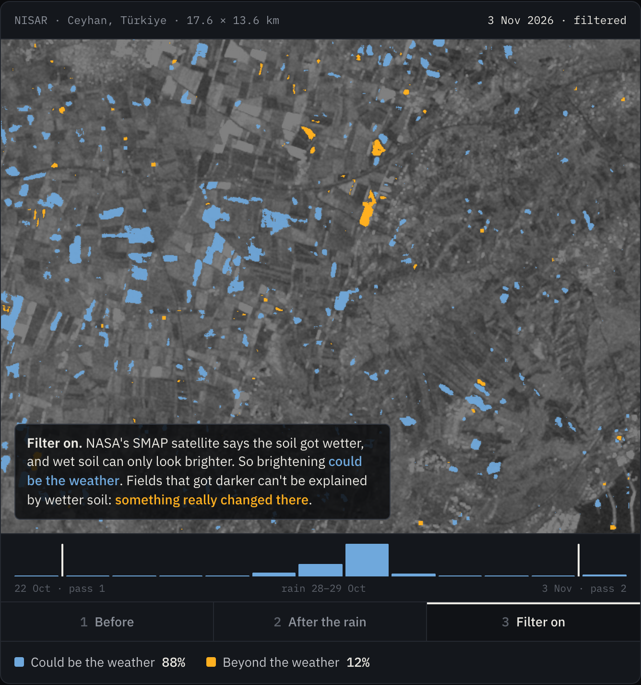
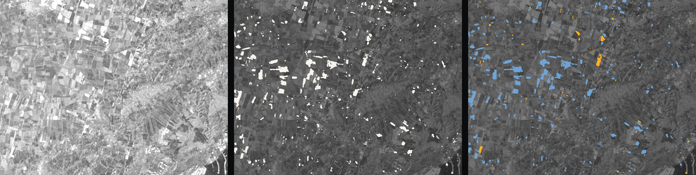
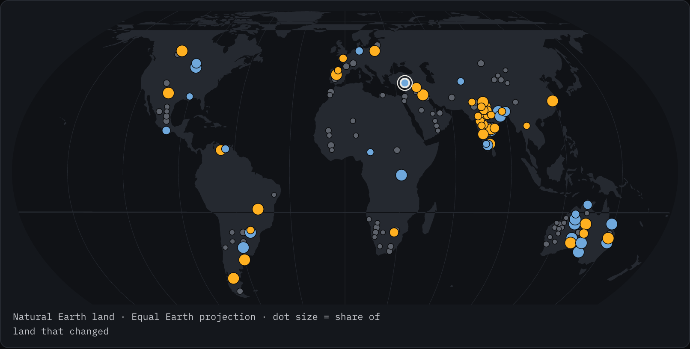
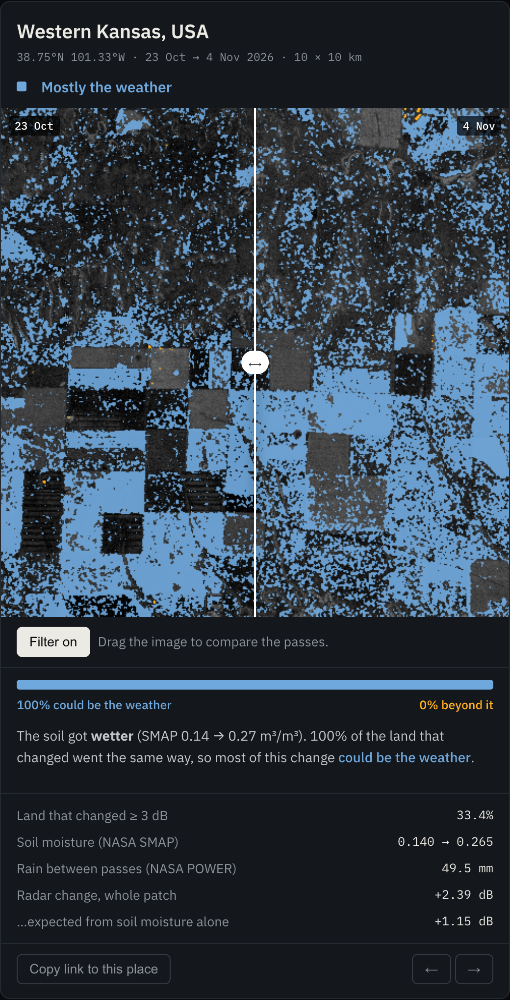
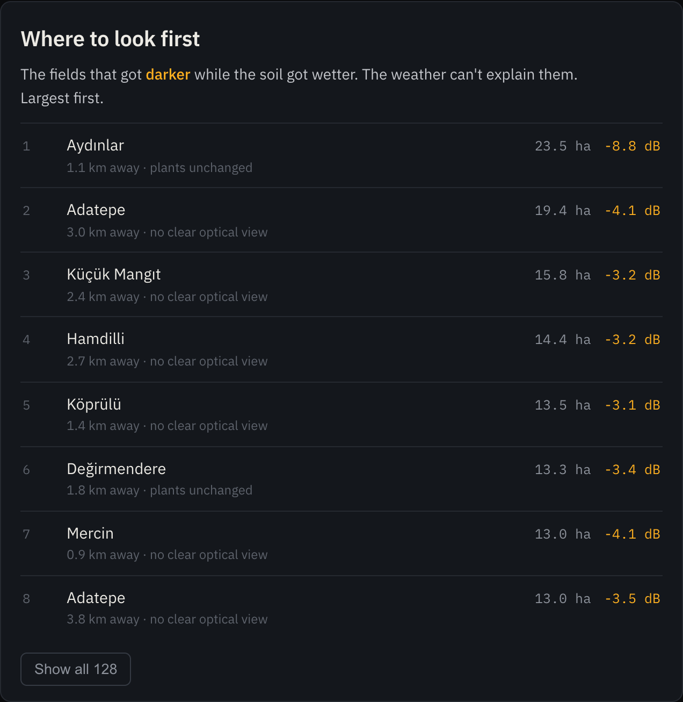
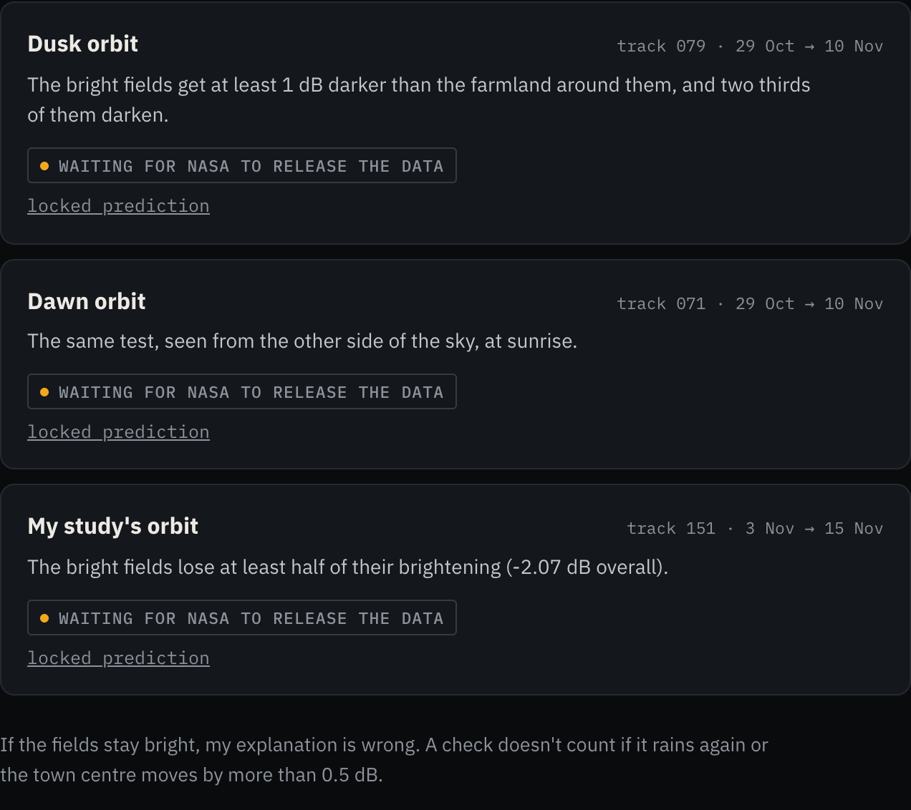
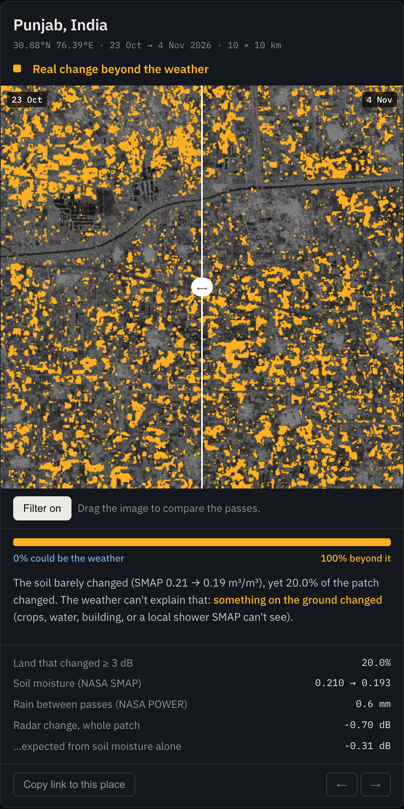

NASA Space Apps 2026 · Dancing with the SARs
Between Passes shows what really changed.
Satellites find floods, harvests and cut-down forests by comparing two pictures of the same place. But rain fools them: after a rainy week, whole regions look "changed" when nothing happened. Between Passes sorts out those false alarms, with NASA NISAR, SMAP and POWER data.
Team Dusk Orbit · Deniz Efe Bulut · Niğde, Türkiye
deniz2077.github.io/between-passes

01The problem
Comparing two radar passes is how the world spots floods, harvests, cleared forest and damage. But wet soil looks brighter to radar and dry soil darker, so change maps fill up with weather.
of the land looked "changed" (typical place, 45 random places)
of the land looked "changed" (typical place, 63 random places)
more false-looking change. Where the soil got wetter or drier, 85% of it could be just the weather.
147 random NISAR L2 GCOV repeat pairs (12 days apart) · changed = ≥ 3 dB · NASA SMAP SPL3SMP_E soil moisture, same days · wetter/drier ≥ 0.05 m³/m³, same ≤ 0.02
02The solution

1 · Measure. Two NISAR passes over Ceyhan, Türkiye, 12 days apart. A normal change map flags everything (white).
2 · Ask the weather. NASA SMAP: the soil got wetter after the first autumn rain (0.16 → 0.36 m³/m³).
3 · Sort. Fields that got brighter could be just the rain (blue, 88%). Darker ones can't: something really changed (orange, 12%).
Rules committed to GitHub before running them on any place (research/filter/WEATHER_FILTER.md).
03It scales

One command runs it on any place NISAR has flown. Right: western Kansas, run today. 50 mm of rain made a third of the land look "changed"; all of it went the way the soil moisture did.

04Local impact · Ceyhan, my home region

05The proof
With the rules written down first, NISAR's change followed SMAP's soil-moisture change at 74 random places, and again at 73 new ones: a strong link, with less than a 1-in-1,000 chance of being luck (ρ = 0.58 and 0.55).
If Ceyhan's bright fields were wet soil, they will fade as it dries. I locked what three upcoming NISAR passes will show on GitHub before NASA released the data. The app scores them automatically, whatever they say.

Pre-registration: commits 43f2fbb, 7e1ffcf · predictions: e3915c1 (14 Nov), a068d8f (15 Nov) · 37 automated tests · every number re-checked in the browser
06Who it's for

Punjab, India, run today: the soil stayed the same, yet 20% of the land changed. That is beyond the weather.
Free, open source, no login. A screening filter: it says where to look, not what happened. AI (Claude Code) assisted with code and documents; the idea and decisions are the participant's.